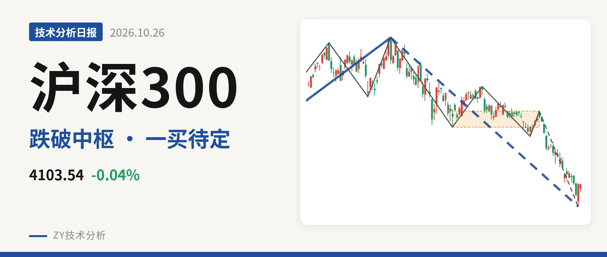
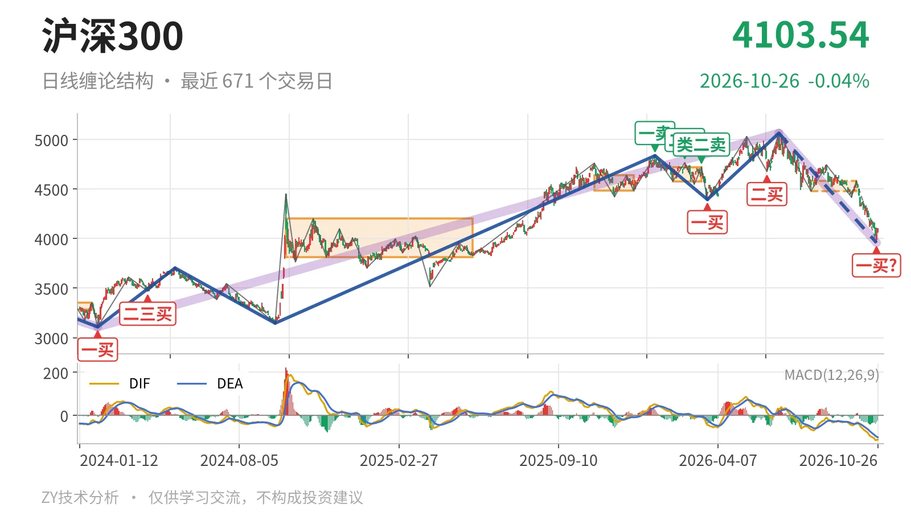
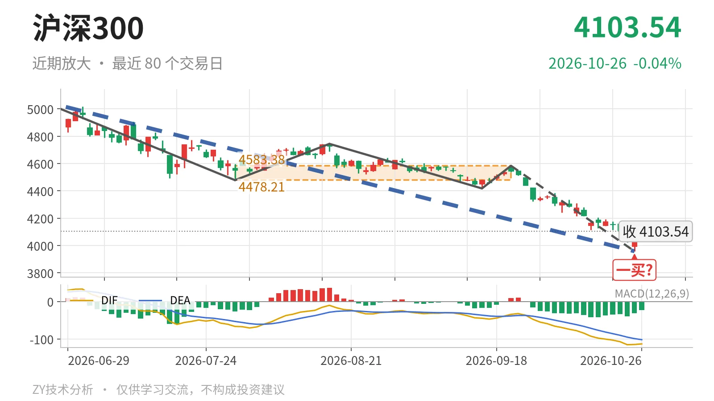

沪深300｜跌破中枢下沿，反抽看4478点

最近日线中枢 4478.21—4583.38点，收盘位于中枢之下
一句话：日线跌破最近中枢下沿，10月23日一买暂定，反抽看4478点。
🧭 走势结构：下跌段延续，未见结束
当前处于6月23日以来的日线下跌段内，线段还在延续。更大级别上，2021年2月18日至2024年2月2日下跌段已经结束，2024年2月2日至2026年6月23日上涨段尚无结束信号，6月23日以来的下跌段成为主要回落段，跌幅约21.8%。日线线段上，3月24日至6月23日的上涨线段已经结束，6月23日至10月23日的下跌线段包含5笔，最后一笔尚未走完，因此不是中枢震荡而是下跌段主导。

📉 中枢与位置：跌破未完成中枢，重心下移
最新收盘4103.54点已跌破最近日线笔中枢下沿4478.21点约8.4%，位于该中枢下方。最近中枢为7月30日至9月22日区间4478.21—4583.38点，中轴4530.80点，属于未完成中枢；对比2月3日至3月17日中枢4578.21—4720.86点，中枢下沿与中轴均下移。当前价格仍处于2024年10月8日至2025年5月30日的中枢3812.32—4200.91点内部，但已离开最近日线中枢。
⚠️ 买卖点：10月23日一买暂定，前买点被削弱
10月23日的3958.14点只能视为暂定的一买。该买点落在9月22日至10月23日的下跌笔内，这笔还没有走完，结构仍会随延伸改变。3月24日一买4394.29点、6月8日二买4677.57点，因10月23日创出3958.14点新低，只对应较小级别；1月13日一卖4836.95点、2月25日二卖4766.56点、3月17日类二卖4720.86点一个比一个低，也被6月23日5064.27点新高削弱，同样只对较小级别成立。

📊 背驰：绿柱面积放大，没有背驰
仍在延续的9月22日至10月23日下跌笔没有出现“新低不新弱”。这笔跌13.6%，绿柱面积494，DIF低点-115.1；对照8月18日至9月16日下跌笔，绿柱面积103，DIF低点-44.8。价格创出新低的同时，绿柱面积明显放大，DIF低点大幅下移，说明下跌力度没有衰减，当前看不到背驰结构。最新DIF在零轴下运行于-113.0，空头环境未改。
🎯 关键位置：反抽看4478点，三卖待定
整体结构偏弱，弱在跌破最近中枢下沿后未出现背驰。反抽若回不到4478点上方，便构成对7月30日至9月22日中枢的向下离开后反抽不进中枢，属三卖结构；重新站上4478点，则回落更可能只是中枢扩展。下方10月23日暂定一买3958点若继续被击穿，该一买被破坏，日线下跌段将继续延伸。
⚠️ 本文为基于公开行情数据的缠论技术结构记录，由程序自动计算并生成，仅供学习交流，不构成任何投资建议。市场有风险，投资需谨慎。